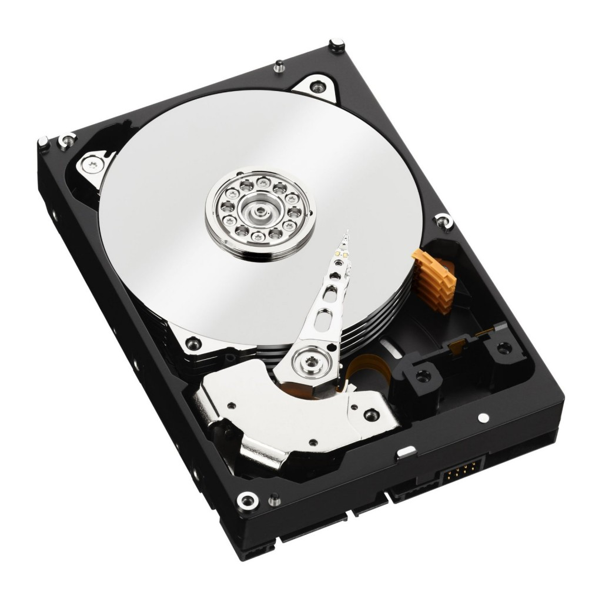

|  |
A hard disk drive (HDD), hard disk, hard drive, or fixed disk is an electro-mechanical data storage device that stores and retrieves digital data using magnetic storage with one or more rigid rapidly rotating platters coated with magnetic material. The platters are paired with magnetic heads, usually arranged on a moving actuator arm, which read and write data to the platter surfaces. Data is accessed in a random-access manner, meaning that individual blocks of data can be stored and retrieved in any order. HDDs are a type of non-volatile storage, retaining stored data when powered off. Modern HDDs are typically in the form of a small rectangular box. Introduced by IBM in 1956, HDDs were the dominant secondary storage device for general-purpose computers beginning in the early 1960s. HDDs maintained this position into the modern era of servers and personal computers, though personal computing devices produced in large volume, like cell phones and tablets, rely on flash memory storage devices. More than 224 companies have produced HDDs historically, though after extensive industry consolidation most units are manufactured by Seagate, Toshiba, and Western Digital. HDDs dominate the volume of storage produced (exabytes per year) for servers. Though production is growing slowly, sales revenues and unit shipments are declining because solid-state drives (SSDs) have higher data-transfer rates, higher areal storage density, somewhat better reliability, and much lower latency and access times. |
|
The primary characteristics of an HDD are its capacity and performance. Capacity is specified in unit prefixes corresponding to powers of 1000: a 1-terabyte (TB) drive has a capacity of 1,000 gigabytes (GB; where 1 gigabyte = 1 billion (109) bytes). Typically, some of an HDD's capacity is unavailable to the user because it is used by the file system and the computer operating system, and possibly inbuilt redundancy for error correction and recovery. There can be confusion regarding storage capacity, since capacities are stated in decimal gigabytes (powers of 1000) by HDD manufacturers, whereas the most commonly used operating systems report capacities in powers of 1024, which results in a smaller number than advertised. Performance is specified as the time required to move the heads to a track or cylinder (average access time), the time it takes for the desired sector to move under the head (average latency, which is a function of the physical rotational speed in revolutions per minute), and finally the speed at which the data is transmitted (data rate). |
|